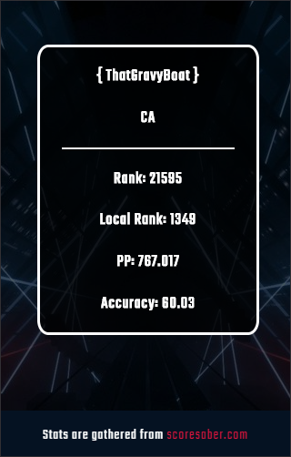
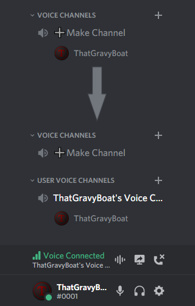

Last updated: 2/19/2020 | Twitch Extension
I made this extension for the Darwin Pro League Discord server this extension consists of 6 different SCHEDULES for 6 different regions that Darwin Pro League host scrims for it also has an about page and a tournament page that will only show up when we have a tournament currently running.
Last updated: 2/19/2020 | Twitch Extension
I made this extension to display Beat Saber statistics for streamers, it gets it statistics from Scoresaber.com these stats are displayed in a panel extension.

Last updated: 3/1/2020 | Open Source
I made this discord bot using node.js and Discord.js, this bot makes voice channels in a category that is specified in bots config when the user enters a specific channel, when the user enters the channel it creates and moves the user to a new channel with their name as the voice channel name the channel also deletes after all users have left the channel. This is an open source project you can go the the title link to get the source code and run the bot your self. have fun creating voice channels!
